Image Lib
Operators over SImageND images. Three pixel types make three different chromosomes — intensities, masks and label maps — so an operator only offers itself where it makes sense: morphology to masks, thresholding as the way to produce a mask, segmentation as the way to produce a label map. See Image Types for the type machinery.
This page gives worked, rendered examples for fixation saliency, orientation maps and the pooling families. The remaining bundles are documented in the Core image bundle reference, and the exhaustive operator listing is in the Bundle Catalogue.
Fixation Saliency
bundle_image2DIntensity_saliency_fixation_factory contains classical bottom-up fixation predictors. They return a same-size intensity image in [0, 1]: brighter pixels are more likely fixation targets. The bundle is available through get_extension_saliency_intensityimg rather than the basic image collection because its multiscale operators are comparatively expensive.
itti_koch_saliency
This is the grayscale part of the Itti-Koch-Niebur model: intensity and four orientation channels are compared across six center-surround scale pairs, normalized for conspicuity, and combined into one map. This grayscale implementation omits color-opponency channels; see RGB color statistics for RGB-to-intensity transforms. The operator produces the static map; it does not simulate winner-take-all attention or inhibition of return.
The specialized callable supports one, two, or three MAGE inputs; trailing framework args... do not count toward this limit:
saliency = fn(img)
saliency = fn(img, orientation_weight)
saliency = fn(img, orientation_weight, smoothing_sigma)| Parameter | Accepted mapping | Effect | Default |
|---|---|---|---|
orientation_weight | finite values clamped to [0, 1] | 0 uses intensity contrast only; 1 uses oriented contrast only | 0.5 |
smoothing_sigma | finite values clamped to [0, 5] pixels | Gaussian smoothing applied to the final map; below 0.1 (including 0) there is no smoothing | 0.0 |
Non-finite values use the listed defaults. The result has the same size and IntensityPixel storage type as img. Additional trailing arguments are accepted and ignored for compatibility with the MAGE node-calling convention. The first example uses both defaults.
The map is computed at level 4 of the pyramid, which is 1/16 of the input size along each side (each level keeps every second pixel), and is then resized back to the input size. On a 64×64 image the map has 4×4 cells; on a 28×28 image only 2×2. It marks which part of a small image stands out, not which pixel. For pixel-level detail use spectral_residual_saliency.
using UTCGP
using ImageCore: N0f8
values = zeros(Float64, 64, 64)
values[25:40, 25:40] .= 1.0
img = SImageND(IntensityPixel{N0f8}.(values))
fn = bundle_image2DIntensity_saliency_fixation_factory[:itti_koch_saliency].fn(typeof(img))
saliency = fn(img)
(size(saliency), eltype(saliency), extrema(reinterpret(saliency.img)))((64, 64), IntensityPixel{FixedPointNumbers.N0f8}, (0.0N0f8, 1.0N0f8))
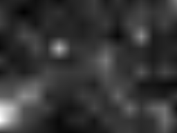
The coffee photograph provides a scene with several stronger competing fixation targets. The source image is the coffee.png test image distributed by JuliaImages/TestImages.jl.


All parameter comparisons below use the same coffee input shown above.
Effect of orientation_weight
At 0, only intensity contrast contributes. At 1, only oriented contrast contributes; 0.5 gives both equal weight.
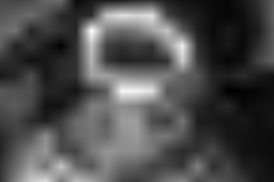
orientation_weight = 0.0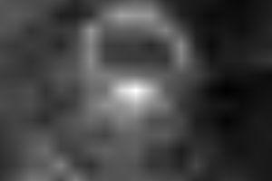
orientation_weight = 0.5 (default)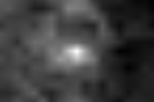
orientation_weight = 1.0Effect of smoothing_sigma
Increasing the Gaussian standard deviation merges nearby responses and spreads sharp peaks. A value of 0 skips final smoothing.

smoothing_sigma = 0.0 (default)smoothing_sigma = 1.5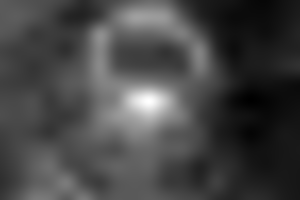
smoothing_sigma = 4.0Second scene: Lena (16-bit grayscale)
The source is lena_gray_16bit.png from JuliaImages/TestImages.jl. This example keeps N0f16 storage through the MAGE input and output wrappers.
N0f16)
Effect of orientation_weight
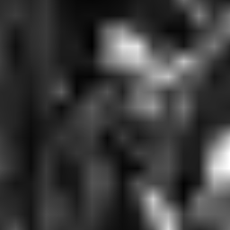
orientation_weight = 0.0
orientation_weight = 0.5 (default)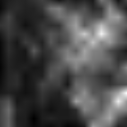
orientation_weight = 1.0Effect of smoothing_sigma
smoothing_sigma = 0.0 (default)smoothing_sigma = 1.5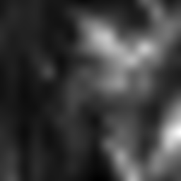
smoothing_sigma = 4.0UTCGP.image2D_saliency_fixation.itti_koch_saliency_image2D_factory — Function
itti_koch_saliency_image2D_factory(::Type{I})Specialize the grayscale Itti-Koch-Niebur fixation-saliency operator for a concrete MAGE intensity-image type I.
Returns a callable with these effective signatures (at most three MAGE inputs):
itti_koch_saliency(image::I) -> I
itti_koch_saliency(image::I, orientation_weight::Real) -> I
itti_koch_saliency(image::I, orientation_weight::Real, smoothing_sigma::Real) -> Iimage is the intensity image to process. orientation_weight controls the blend between intensity contrast (0) and oriented contrast (1) and is clamped to [0, 1]; its default is 0.5. smoothing_sigma is the final Gaussian smoothing standard deviation in pixels and is clamped to [0, 5] (below 0.1 there is no smoothing); its default is 0. Non-finite parameter values use their respective defaults. Any trailing args are accepted and ignored so the callable follows the MAGE node-function convention. The returned image has the same dimensions and IntensityPixel storage type as image.
The implementation follows the 1998 model's dyadic Gaussian pyramid, six center-surround scale pairs, four Gabor orientations, and local-maximum normalization. It returns a same-size IntensityPixel map in [0, 1]. Because the current MAGE image type is grayscale, it deliberately omits the red-green and blue-yellow opponency maps. It also stops at the static saliency map rather than simulating winner-take-all dynamics or inhibition of return.
Reference: L. Itti, C. Koch, and E. Niebur, IEEE TPAMI 20(11), 1998, doi:10.1109/34.730558.
The implementation follows the multiscale map construction in Itti, Koch, and Niebur (1998), with the documented grayscale and static-map restrictions above.
Fixation Saliency with Spectral Residual Saliency
spectral_residual_saliency implements the frequency-domain method of Hou and Zhang. It removes the locally predictable part of the Fourier log-amplitude spectrum, retains the original phase, reconstructs and squares the residual, then smooths and normalizes the map. It is a bottom-up novelty detector rather than a semantic object detector: a distinctive background can therefore still outscore a familiar foreground object.
The specialized callable has these effective signatures:
saliency = fn(img)
saliency = fn(img, spectral_average_radius)
saliency = fn(img, spectral_average_radius, smoothing_sigma)| Parameter | Accepted mapping | Effect | Default |
|---|---|---|---|
spectral_average_radius | rounded and clamped to 1:15 | Uses a (2r + 1) × (2r + 1) circular mean of the log-amplitude spectrum | 1 (3 × 3) |
smoothing_sigma | finite values clamped to [0, 5] pixels | Spreads sharp residual peaks in the final spatial map; below 0.1 (including 0) there is no smoothing | 2.0 |
Non-finite values use the defaults. The output preserves the exact input size and specialized IntensityPixel storage type.
using UTCGP
using ImageCore: N0f8
values = zeros(Float64, 64, 64)
values[25:40, 25:40] .= 1.0
img = SImageND(IntensityPixel{N0f8}.(values))
fn = bundle_image2DIntensity_saliency_fixation_factory[:spectral_residual_saliency].fn(typeof(img))
saliency = fn(img)
(size(saliency), eltype(saliency), extrema(reinterpret(saliency.img)))((64, 64), IntensityPixel{FixedPointNumbers.N0f8}, (0.0N0f8, 1.0N0f8))Cell image
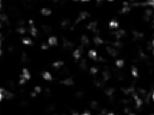
Coffee cup

Effect of spectral_average_radius
A larger radius removes broader trends in the log spectrum and changes the spatial scale at which spectral novelty is emphasized.

spectral_average_radius = 1 (default)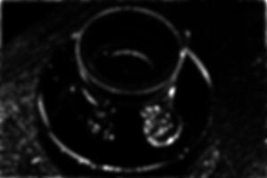
spectral_average_radius = 3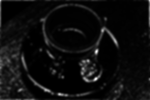
spectral_average_radius = 7Effect of smoothing_sigma
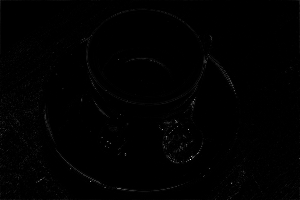
smoothing_sigma = 0.0
smoothing_sigma = 2.0 (default)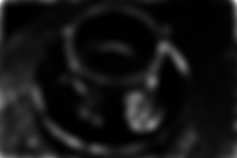
smoothing_sigma = 5.0Lena (16-bit grayscale)
N0f16)
UTCGP.image2D_saliency_fixation.spectral_residual_saliency_image2D_factory — Function
spectral_residual_saliency_image2D_factory(::Type{I})Specialize the grayscale spectral-residual fixation-saliency operator for a concrete MAGE intensity-image type I.
Returns a callable with these effective signatures (at most three MAGE inputs):
spectral_residual_saliency(image::I) -> I
spectral_residual_saliency(image::I, spectral_average_radius::Real) -> I
spectral_residual_saliency(image::I, spectral_average_radius::Real, smoothing_sigma::Real) -> Ispectral_average_radius is rounded to an integer and clamped to [1, 15]; radius r averages the log-amplitude spectrum in a (2r + 1) × (2r + 1) window. Its default is 1, the classical 3 × 3 neighborhood. smoothing_sigma is the final Gaussian standard deviation in pixels, clamped to [0, 5] (below 0.1 there is no smoothing), and defaults to 2. Non-finite values use their respective defaults. Any trailing args are accepted and ignored for the MAGE node-function convention.
The implementation computes the Fourier log-amplitude residual, combines it with the original phase, applies the inverse transform, squares the magnitude, smooths it, and normalizes the result to [0, 1]. The output has exactly the same dimensions and IntensityPixel storage type as the specialization I. The spectral operations are channel-local, so a future RGB specialization can compute per-channel residual maps before combining them without changing this grayscale API.
Reference: X. Hou and L. Zhang, CVPR 2007, doi:10.1109/CVPR.2007.383267.
Reference: Hou and Zhang (2007).
Orientation Image Maps
The gallery and scalar summaries share the same Sobel machinery. Its conventions distinguish gradient directions from directions along edges:
UTCGP.image2D_orientation_common — Module
Shared orientation machinery: Sobel derivatives, gradient and edge orientations, and the four-bin orientation energies.
Angle conventions
Rows grow downwards, so angles are measured from the +x axis (pointing right) clockwise on screen, in [0, π) (an orientation has no head or tail). 0 is horizontal, π/4 is a \ diagonal (going down to the right), π/2 vertical, 3π/4 a / diagonal.
Two different angles are used, 90° apart:
- the gradient orientation is the direction in which the intensity changes fastest, perpendicular to an edge: a vertical edge (dark left, bright right) has gradient orientation
0. Used bygrad_orientationandorientation_select. - the edge (structure) orientation is the direction along the edge: the same vertical edge has edge orientation
π/2. Used by the scalar summaries (orientation_energy_*,dominant_orientation,orientation_coherence).
bundle_image2DIntensity_orientation_factory turns an intensity image into maps of its edges, from Sobel derivatives:
| Operator | Output |
|---|---|
grad_magnitude(img) | Edge strength at each pixel, rescaled so the strongest edge of the image is 1. |
grad_orientation(img) | The gradient orientation (the direction across the edge, where the intensity changes fastest) divided by 180°, in [0, 1). Flat pixels also read 0. |
orientation_select(img, θ, bandwidth) | The edge strength, kept only where the gradient orientation is within bandwidth · 90° of θ · 180° (θ wraps around 1), then rescaled to [0, 1]. Defaults θ = 0, bandwidth = 0.2 (±18°). |
Angle conventions. Image rows grow downwards, so angles are measured from "pointing right" clockwise on screen: 0 = right, 0.25 (45°) = down and to the right, 0.5 (90°) = down, 0.75 (135°) = down and to the left. An orientation has no head or tail, so 0 and 1 are the same.
These maps use the gradient direction, which is perpendicular to the edge: a vertical edge (dark left, bright right) has gradient orientation 0, and orientation_select(img, 0) keeps vertical edges. The scalar summaries of the number library (orientation_energy_*, dominant_orientation) use the edge direction instead, so orientation_energy_90 measures those same vertical edges.
On a bright disk, every edge orientation appears once around the border, so the disk shows the conventions at a glance (the original is shown at 3×):
| Input | grad_magnitude | grad_orientation |
|---|---|---|
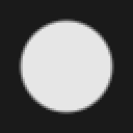 |  | 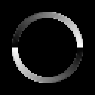 |
In grad_orientation, the left and right sides of the disk (vertical edges, gradient pointing left/right) are near 0 (black) or 1 (white, the same angle after wrapping around); the top and bottom (horizontal edges, gradient pointing up/down) are mid-grey (0.5). The black inside and outside the disk are flat pixels, which also read 0: use grad_magnitude to tell them apart.
Effect of θ on orientation_select(disk, θ, 0.1) (±9°): each value keeps the part of the border whose gradient points that way.
θ = 0: gradient → right/left, vertical edges | θ = 0.25: ↘/↖, the / parts of the border | θ = 0.5: ↓/↑, horizontal edges | θ = 0.75: ↙/↗, the \ parts of the border |
|---|---|---|---|
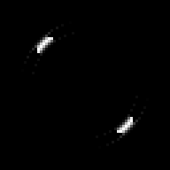 | 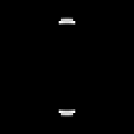 | 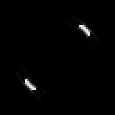 |
Effect of bandwidth on orientation_select(disk, 0, bandwidth): the band is ±bandwidth · 90°, so 1 keeps every edge.
0.05 (±4.5°) | 0.2 (±18°, default) | 0.5 (±45°) | 1.0 (±90°: everything) |
|---|---|---|---|
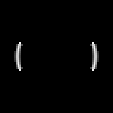 | 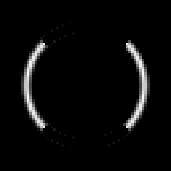 | 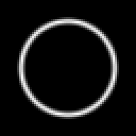 |
The values grad_orientation gives on straight edges, and which θ of orientation_select keeps them:
println(rpad("edge", 18), rpad("grad_orientation on the edge", 32), "kept by orientation_select(img, θ) with θ =")
for (name, values) in steps
img = g_intensity(values)
inside = (8:57, 8:57) # away from the image border
pixels(out) = Float64.(reinterpret(out.img))[inside...]
orientation = pixels(g_call(op(:grad_orientation), img))
on_edge = pixels(g_call(op(:grad_magnitude), img)) .> 0.5
mean_orientation = round(sum(orientation .* on_edge) / count(on_edge), digits = 2)
kept = [θ for θ in (0.0, 0.25, 0.5, 0.75) if any(>(0), pixels(g_call(op(:orientation_select), img, θ, 0.1)))]
println(rpad(name, 18), rpad(mean_orientation, 32), kept)
endedge grad_orientation on the edge kept by orientation_select(img, θ) with θ =
vertical edge 0.0 [0.0]
horizontal edge 0.5 [0.5]
\ edge 0.75 [0.75]
/ edge 0.25 [0.25]| vertical edge | horizontal edge | \ edge | / edge |
|---|---|---|---|
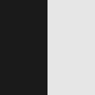 | 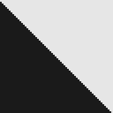 | 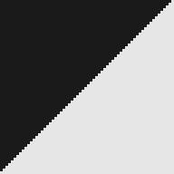 |
On a microscopy image:
| Input | grad_magnitude | grad_orientation | orientation_select(img, 0, 0.2): vertical edges | orientation_select(img, 0.5, 0.2): horizontal edges |
|---|---|---|---|---|
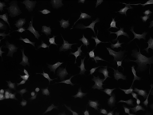 | 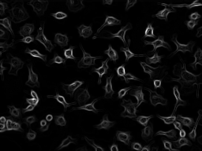 | 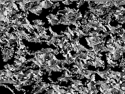 | 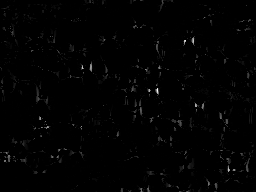 | 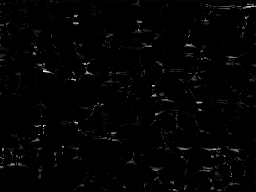 |
Block Pooling Functions
In this set of bundles we currently find:
avgpool_blocksmaxpool_blocksminpool_blocksavgpool_cross_blocksmaxpool_cross_blocksminpool_cross_blocks
The pooling functions are exposed through the typed image pooling bundles:
bundle_image2DIntensity_pool_factorybundle_image2DBinary_pool_factorybundle_image2DSegment_pool_factory
These functions use non-overlapping block windows scanned from left to right and top to bottom. Each block is reduced to a single value, and that value is written back over the covered block, so the output has the same size as the input and looks like a mosaic of k × k tiles. There is no padding; the last block on the right or bottom may be partial if the image size is not divisible by k.
kis rounded and clamped to1… the longer image side;NaN/±Infuse2.k = 1returns the image unchanged.- Segment images (label maps): averaging label numbers would invent labels that are not in the image (the mean of labels
1and3is2), so theavgpoolers return the most frequent label of each block instead (ties go to the smallest label).max/minkeep the largest/smallest label. - Binary images:
avgis a majority vote (the mean rounded to0/1),maxis a dilation-like "any pixel set",minan erosion-like "all pixels set".
To obtain a callable function, first select the function from the bundle, then specialize it on the concrete image type.
using UTCGP
using ImageCore: N0f8
img = UTCGP.SImageND(UTCGP.IntensityPixel{N0f8}.(rand(4, 4)))
avg_intensity = UTCGP.bundle_image2DIntensity_pool_factory[:avgpool_blocks].fn(typeof(img))
max_intensity = UTCGP.bundle_image2DIntensity_pool_factory[:maxpool_blocks].fn(typeof(img))
(typeof(avg_intensity), typeof(max_intensity))(typeof(UTCGP.image_pool.var"avgpool_blocks_image2D_UTCGP.SImageND{Tuple{Int64(0000000000000000000000000000000000000000000000000000000000000100),Int64(0000000000000000000000000000000000000000000000000000000000000100)},UTCGP.IntensityPixel{FixedPointNumbers.Normed{UInt8,Int64(0000000000000000000000000000000000000000000000000000000000001000)}},Int64(0000000000000000000000000000000000000000000000000000000000000010),Array{UTCGP.IntensityPixel{FixedPointNumbers.Normed{UInt8,Int64(0000000000000000000000000000000000000000000000000000000000001000)}},Int64(0000000000000000000000000000000000000000000000000000000000000010)}}"), typeof(UTCGP.image_pool.var"maxpool_blocks_image2D_UTCGP.SImageND{Tuple{Int64(0000000000000000000000000000000000000000000000000000000000000100),Int64(0000000000000000000000000000000000000000000000000000000000000100)},UTCGP.IntensityPixel{FixedPointNumbers.Normed{UInt8,Int64(0000000000000000000000000000000000000000000000000000000000001000)}},Int64(0000000000000000000000000000000000000000000000000000000000000010),Array{UTCGP.IntensityPixel{FixedPointNumbers.Normed{UInt8,Int64(0000000000000000000000000000000000000000000000000000000000001000)}},Int64(0000000000000000000000000000000000000000000000000000000000000010)}}"))Avg Pool
UTCGP.image_pool.avgpool_blocks_image2D_factory — Function
avgpool_blocks_image2D_factory(i::Type{I}) where {I<:SizedImage2D}Mean of each k × k block (labels: the most frequent label), written over the block. Example (k = 2): [1 3 5 5; 1 3 5 5] → [2 2 5 5; 2 2 5 5].
Intensity image, k = 2
pooled = avg_intensity(img_intensity, 2)Intensity image, k = 10
pooled = avg_intensity(img_intensity, 10)Binary image, > 0.3, k = 5
pooled = avg_binary(img_binary, 5)Segmented image from fastscanning_image2D, k = 5
pooled = avg_segment(img_segment, 5)Max Pool
UTCGP.image_pool.maxpool_blocks_image2D_factory — Function
maxpool_blocks_image2D_factory(i::Type{I}) where {I<:SizedImage2D}Maximum of each k × k block, written over the block. Example (k = 2): [1 3 5 0; 2 0 5 9] → [3 3 9 9; 3 3 9 9].
Intensity image, k = 2
pooled = max_intensity(img_intensity, 2)Intensity image, k = 10
pooled = max_intensity(img_intensity, 10)Binary image, > 0.3, k = 5
pooled = max_binary(img_binary, 5)Segmented image from fastscanning_image2D, k = 5
pooled = max_segment(img_segment, 5)Min Pool
UTCGP.image_pool.minpool_blocks_image2D_factory — Function
minpool_blocks_image2D_factory(i::Type{I}) where {I<:SizedImage2D}Minimum of each k × k block, written over the block. Example (k = 2): [1 3 5 0; 2 0 5 9] → [0 0 0 0; 0 0 0 0].
Intensity image, k = 2
pooled = min_intensity(img_intensity, 2)Intensity image, k = 10
pooled = min_intensity(img_intensity, 10)Binary image, > 0.3, k = 5
pooled = min_binary(img_binary, 5)Segmented image from fastscanning_image2D, k = 5
pooled = min_segment(img_segment, 5)Cross Pooling Functions
Avg Cross Pool
UTCGP.image_pool.avgpool_cross_blocks_image2D_factory — Function
avgpool_cross_blocks_image2D_factory(i::Type{I}) where {I<:SizedImage2D}Mean of the centre row and centre column of each k × k block (labels: the most frequent label), written over the block. Example (k = 3): block [1 2 3; 4 5 6; 7 8 9] → mean of [4, 5, 6, 2, 8] = 5.
Custom 10x10 intensity image, k = 3
pooled = avg_cross_intensity(img_cross_demo, 3)Custom 10x10 intensity image, k = 5
pooled = avg_cross_intensity(img_cross_demo, 5)Binary image, > 0.3, k = 10
pooled = avg_cross_binary(img_binary, 10)Segmented image from fastscanning_image2D, k = 10
pooled = avg_cross_segment(img_segment, 10)Max Cross Pool
UTCGP.image_pool.maxpool_cross_blocks_image2D_factory — Function
maxpool_cross_blocks_image2D_factory(i::Type{I}) where {I<:SizedImage2D}Maximum of the centre row and centre column of each k × k block. Example (k = 3): block [1 2 3; 4 5 6; 7 8 9] → max of [4, 5, 6, 2, 8] = 8.
Custom 10x10 intensity image, k = 3
pooled = max_cross_intensity(img_cross_demo, 3)Custom 10x10 intensity image, k = 5
pooled = max_cross_intensity(img_cross_demo, 5)Binary image, > 0.3, k = 10
pooled = max_cross_binary(img_binary, 10)Segmented image from fastscanning_image2D, k = 10
pooled = max_cross_segment(img_segment, 10)Min Cross Pool
UTCGP.image_pool.minpool_cross_blocks_image2D_factory — Function
minpool_cross_blocks_image2D_factory(i::Type{I}) where {I<:SizedImage2D}Minimum of the centre row and centre column of each k × k block. Example (k = 3): block [1 2 3; 4 5 6; 7 8 9] → min of [4, 5, 6, 2, 8] = 2.
Custom 10x10 intensity image, k = 3
pooled = min_cross_intensity(img_cross_demo, 3)Custom 10x10 intensity image, k = 5
pooled = min_cross_intensity(img_cross_demo, 5)Binary image, > 0.3, k = 10
pooled = min_cross_binary(img_binary, 10)Segmented image from fastscanning_image2D, k = 10
pooled = min_cross_segment(img_segment, 10)Sliding Window Poolers
In this set of bundles we currently find:
meanpoolmaxpoolminpoolstdpoolmedianpooluniquecountpoolargmaxcountpoolargmincountpooliqrpool
These functions use full sliding k × k windows with no padding. Only windows that fully fit in the image are reduced, using the provided stride, and the reduced image is then resized back to the original size with nearest-neighbor sampling.
kis rounded and clamped to1… the shorter image side, andstrideto1… the longer side (NaN/±Infusek = 2,stride = 1).- The number of windows along a side is
fld(n - k, stride) + 1. Withn = 28,k = 5,stride = 1that is 24 windows, stretched back over 28 pixels: output pixel1shows the window centred on pixel3, output pixel28the window centred on pixel26, and a few rows and columns are repeated in between. The result is a slightly zoomed-in version of the input; with a largerstrideit also looks blocky. - The count poolers (
uniquecountpool,argmaxcountpool,argmincountpool) count pixels, so they are rescaled to[0, 1]over the whole image before being stored. - Segment images:
meanpoolreturns the most frequent label of each window (ties go to the smallest label) rather than an invented average label.
The sliding-window poolers are exposed through:
bundle_image2DIntensity_pooler_factorybundle_image2DBinary_pooler_factorybundle_image2DSegment_pooler_factory
using UTCGP
using ImageCore: N0f8
img = UTCGP.SImageND(UTCGP.IntensityPixel{N0f8}.(rand(8, 8)))
mean_intensity = UTCGP.bundle_image2DIntensity_pooler_factory[:meanpool].fn(typeof(img))
iqr_intensity = UTCGP.bundle_image2DIntensity_pooler_factory[:iqrpool].fn(typeof(img))
(typeof(mean_intensity), typeof(iqr_intensity))(typeof(UTCGP.image_pooler.var"meanpool_image2D_UTCGP.SImageND{Tuple{Int64(0000000000000000000000000000000000000000000000000000000000001000),Int64(0000000000000000000000000000000000000000000000000000000000001000)},UTCGP.IntensityPixel{FixedPointNumbers.Normed{UInt8,Int64(0000000000000000000000000000000000000000000000000000000000001000)}},Int64(0000000000000000000000000000000000000000000000000000000000000010),Array{UTCGP.IntensityPixel{FixedPointNumbers.Normed{UInt8,Int64(0000000000000000000000000000000000000000000000000000000000001000)}},Int64(0000000000000000000000000000000000000000000000000000000000000010)}}"), typeof(UTCGP.image_pooler.var"iqrpool_image2D_UTCGP.SImageND{Tuple{Int64(0000000000000000000000000000000000000000000000000000000000001000),Int64(0000000000000000000000000000000000000000000000000000000000001000)},UTCGP.IntensityPixel{FixedPointNumbers.Normed{UInt8,Int64(0000000000000000000000000000000000000000000000000000000000001000)}},Int64(0000000000000000000000000000000000000000000000000000000000000010),Array{UTCGP.IntensityPixel{FixedPointNumbers.Normed{UInt8,Int64(0000000000000000000000000000000000000000000000000000000000001000)}},Int64(0000000000000000000000000000000000000000000000000000000000000010)}}"))Mean Pool
UTCGP.image_pooler.meanpool_image2D_factory — Function
meanpool_image2D_factory(i::Type{I}) where {I<:SizedImage2D}Mean of each k × k window (labels: the most frequent label), stretched back to the image size. Example (k = 2): windows of [0 0 1; 0 0 1; 1 1 1] → [0 0.5; 0.5 0.75].
Intensity image, k = 3, stride = 1
pooled = pooler_intensity[:meanpool](img_intensity, 3, 1)Intensity image, k = 5, stride = 2
pooled = pooler_intensity[:meanpool](img_intensity, 5, 2)Binary image, k = 5, stride = 2
pooled = pooler_binary[:meanpool](img_binary, 5, 2)Segmented image from fastscanning_image2D, k = 5, stride = 2
pooled = pooler_segment[:meanpool](img_segment, 5, 2)Max Pool
UTCGP.image_pooler.maxpool_image2D_factory — Function
maxpool_image2D_factory(i::Type{I}) where {I<:SizedImage2D}Maximum of each k × k window, stretched back to the image size. Example (k = 2): windows of [1 5 0; 3 2 0; 0 0 9] → [5 5; 3 9].
Intensity image, k = 3, stride = 1
pooled = pooler_intensity[:maxpool](img_intensity, 3, 1)Intensity image, k = 5, stride = 2
pooled = pooler_intensity[:maxpool](img_intensity, 5, 2)Binary image, k = 5, stride = 2
pooled = pooler_binary[:maxpool](img_binary, 5, 2)Segmented image from fastscanning_image2D, k = 5, stride = 2
pooled = pooler_segment[:maxpool](img_segment, 5, 2)Min Pool
UTCGP.image_pooler.minpool_image2D_factory — Function
minpool_image2D_factory(i::Type{I}) where {I<:SizedImage2D}Minimum of each k × k window, stretched back to the image size. Example (k = 2): windows of [1 5 0; 3 2 0; 0 0 9] → [1 0; 0 0].
Intensity image, k = 3, stride = 1
pooled = pooler_intensity[:minpool](img_intensity, 3, 1)Intensity image, k = 5, stride = 2
pooled = pooler_intensity[:minpool](img_intensity, 5, 2)Binary image, k = 5, stride = 2
pooled = pooler_binary[:minpool](img_binary, 5, 2)Segmented image from fastscanning_image2D, k = 5, stride = 2
pooled = pooler_segment[:minpool](img_segment, 5, 2)Std Pool
UTCGP.image_pooler.stdpool_image2D_factory — Function
stdpool_image2D_factory(i::Type{I}) where {I<:SizedImage2D}Sample standard deviation of each k × k window (0 for k = 1), stretched back to the image size. Example: a window [1 2; 3 4] → ≈ 1.29.
Intensity image, k = 3, stride = 1
pooled = pooler_intensity[:stdpool](img_intensity, 3, 1)Intensity image, k = 5, stride = 2
pooled = pooler_intensity[:stdpool](img_intensity, 5, 2)Binary image, k = 5, stride = 2
pooled = pooler_binary[:stdpool](img_binary, 5, 2)Segmented image from fastscanning_image2D, k = 5, stride = 2
pooled = pooler_segment[:stdpool](img_segment, 5, 2)Median Pool
UTCGP.image_pooler.medianpool_image2D_factory — Function
medianpool_image2D_factory(i::Type{I}) where {I<:SizedImage2D}Median of each k × k window, stretched back to the image size. Example: a window [3 7; 3 9] → middle(3, 7) = 5.
Intensity image, k = 3, stride = 1
pooled = pooler_intensity[:medianpool](img_intensity, 3, 1)Intensity image, k = 5, stride = 2
pooled = pooler_intensity[:medianpool](img_intensity, 5, 2)Binary image, k = 5, stride = 2
pooled = pooler_binary[:medianpool](img_binary, 5, 2)Segmented image from fastscanning_image2D, k = 5, stride = 2
pooled = pooler_segment[:medianpool](img_segment, 5, 2)Unique Count Pool
UTCGP.image_pooler.uniquecountpool_image2D_factory — Function
uniquecountpool_image2D_factory(i::Type{I}) where {I<:SizedImage2D}Number of distinct values in each k × k window, rescaled to [0, 1] over the image. Example: a window [3 7; 3 9] → 3 before rescaling.
Intensity image, k = 3, stride = 1
pooled = pooler_intensity[:uniquecountpool](img_intensity, 3, 1)Intensity image, k = 5, stride = 2
pooled = pooler_intensity[:uniquecountpool](img_intensity, 5, 2)Binary image, k = 5, stride = 2
pooled = pooler_binary[:uniquecountpool](img_binary, 5, 2)Segmented image from fastscanning_image2D, k = 5, stride = 2
pooled = pooler_segment[:uniquecountpool](img_segment, 5, 2)Argmax Count Pool
UTCGP.image_pooler.argmaxcountpool_image2D_factory — Function
argmaxcountpool_image2D_factory(i::Type{I}) where {I<:SizedImage2D}How many pixels of each k × k window share its maximum, rescaled to [0, 1] over the image. Example: a window [9 7; 3 9] → 2 before rescaling.
Intensity image, k = 3, stride = 1
pooled = pooler_intensity[:argmaxcountpool](img_intensity, 3, 1)Intensity image, k = 5, stride = 2
pooled = pooler_intensity[:argmaxcountpool](img_intensity, 5, 2)Binary image, k = 5, stride = 2
pooled = pooler_binary[:argmaxcountpool](img_binary, 5, 2)Segmented image from fastscanning_image2D, k = 5, stride = 2
pooled = pooler_segment[:argmaxcountpool](img_segment, 5, 2)Argmin Count Pool
UTCGP.image_pooler.argmincountpool_image2D_factory — Function
argmincountpool_image2D_factory(i::Type{I}) where {I<:SizedImage2D}How many pixels of each k × k window share its minimum, rescaled to [0, 1] over the image. Example: a window [3 7; 3 9] → 2 before rescaling.
Intensity image, k = 3, stride = 1
pooled = pooler_intensity[:argmincountpool](img_intensity, 3, 1)Intensity image, k = 5, stride = 2
pooled = pooler_intensity[:argmincountpool](img_intensity, 5, 2)Binary image, k = 5, stride = 2
pooled = pooler_binary[:argmincountpool](img_binary, 5, 2)Segmented image from fastscanning_image2D, k = 5, stride = 2
pooled = pooler_segment[:argmincountpool](img_segment, 5, 2)IQR Pool
UTCGP.image_pooler.iqrpool_image2D_factory — Function
iqrpool_image2D_factory(i::Type{I}) where {I<:SizedImage2D}Interquartile range (75th minus 25th percentile, Statistics.quantile's interpolation) of each k × k window, stretched back to the image size. Example: a window [1 2; 3 4] → 3.25 − 1.75 = 1.5.
Intensity image, k = 3, stride = 1
pooled = pooler_intensity[:iqrpool](img_intensity, 3, 1)Intensity image, k = 5, stride = 2
pooled = pooler_intensity[:iqrpool](img_intensity, 5, 2)Binary image, k = 5, stride = 2
pooled = pooler_binary[:iqrpool](img_binary, 5, 2)Segmented image from fastscanning_image2D, k = 5, stride = 2
pooled = pooler_segment[:iqrpool](img_segment, 5, 2)Core image operators: gallery
Pictures of every operator of the basic, arithmetic, transcendental, filtering, morphology, thresholding and segmentation bundles are on their own page: Core Image Operators.
All image bundles
The Core image bundle reference documents these modules and bundles. It is separate from the worked galleries so both pages stay readable.
Timings for the examples
Measured during this documentation build. See Timing methodology for measurement limits and input cases that can make operators expensive.
fixation saliency assets
Julia 1.13.2; znver3; 1 Julia thread(s); optimisation level 2.
Times are warmed wall-clock measurements of the actual calls above, including invokelatest and allocations. Loading, factory generation and image rendering are excluded. CPU load and garbage collection affect these values. The maximum is the slowest observed sample, not a worst-case bound.
| Input | Dimensions | Pixel storage |
|---|---|---|
| image #1 | 192×256 | IntensityPixel{FixedPointNumbers.N0f8} |
| image #2 | 200×300 | IntensityPixel{FixedPointNumbers.N0f8} |
| image #3 | 256×256 | IntensityPixel{FixedPointNumbers.N0f16} |
Numeric-only plot calls of the same operator and arity are grouped: argument ranges cover the sampled values, the median is the median of the per-case medians, and the maximum covers every observed sample. Image calls keep a row for each input/parameter combination.
| Operator | Inputs | Output | Median (µs) | Observed max (µs) | Allocated bytes (median) | Cases / samples |
|---|---|---|---|---|---|---|
itti_koch_saliency_image2D | image #1 | 192×256, IntensityPixel{FixedPointNumbers.N0f8} | 5279.59 | 41743.51 | 3621864 | 1 / 3 |
itti_koch_saliency_image2D | image #2 | 200×300, IntensityPixel{FixedPointNumbers.N0f8} | 5466.99 | 5887.91 | 4113464 | 1 / 3 |
itti_koch_saliency_image2D | image #2; 0.0; 0.0 | 200×300, IntensityPixel{FixedPointNumbers.N0f8} | 5506.05 | 5917.03 | 4113544 | 1 / 3 |
itti_koch_saliency_image2D | image #2; 0.5; 0.0 | 200×300, IntensityPixel{FixedPointNumbers.N0f8} | 5349.83 | 5377.12 | 4113544 | 1 / 3 |
itti_koch_saliency_image2D | image #2; 1.0; 0.0 | 200×300, IntensityPixel{FixedPointNumbers.N0f8} | 5725.28 | 29411.84 | 4113544 | 1 / 3 |
itti_koch_saliency_image2D | image #2; 0.5; 1.5 | 200×300, IntensityPixel{FixedPointNumbers.N0f8} | 6728.43 | 6887.56 | 4653800 | 1 / 3 |
itti_koch_saliency_image2D | image #2; 0.5; 4.0 | 200×300, IntensityPixel{FixedPointNumbers.N0f8} | 7898.47 | 26430.29 | 4700624 | 1 / 3 |
itti_koch_saliency_image2D | image #3 | 256×256, IntensityPixel{FixedPointNumbers.N0f16} | 6916.45 | 7332.5 | 4479344 | 1 / 3 |
itti_koch_saliency_image2D | image #3; 0.0; 0.0 | 256×256, IntensityPixel{FixedPointNumbers.N0f16} | 6930.25 | 7251.04 | 4479424 | 1 / 3 |
itti_koch_saliency_image2D | image #3; 0.5; 0.0 | 256×256, IntensityPixel{FixedPointNumbers.N0f16} | 6791.01 | 6834.36 | 4479424 | 1 / 3 |
itti_koch_saliency_image2D | image #3; 1.0; 0.0 | 256×256, IntensityPixel{FixedPointNumbers.N0f16} | 6798.96 | 27368.05 | 4479424 | 1 / 3 |
itti_koch_saliency_image2D | image #3; 0.5; 1.5 | 256×256, IntensityPixel{FixedPointNumbers.N0f16} | 8330.63 | 8472.24 | 5064584 | 1 / 3 |
itti_koch_saliency_image2D | image #3; 0.5; 4.0 | 256×256, IntensityPixel{FixedPointNumbers.N0f16} | 9487.32 | 9718.97 | 5112352 | 1 / 3 |
spectral_residual_saliency_image2D | image #1 | 192×256, IntensityPixel{FixedPointNumbers.N0f8} | 6658.09 | 6716.48 | 497688 | 1 / 3 |
spectral_residual_saliency_image2D | image #2 | 200×300, IntensityPixel{FixedPointNumbers.N0f8} | 7503.78 | 7528.14 | 601032 | 1 / 3 |
spectral_residual_saliency_image2D | image #3 | 256×256, IntensityPixel{FixedPointNumbers.N0f16} | 9508.59 | 9521.73 | 716976 | 1 / 3 |
spectral_residual_saliency_image2D | image #2; 1.0; 2.0 | 200×300, IntensityPixel{FixedPointNumbers.N0f8} | 7455.54 | 7470.94 | 601112 | 1 / 3 |
spectral_residual_saliency_image2D | image #2; 3.0; 2.0 | 200×300, IntensityPixel{FixedPointNumbers.N0f8} | 7519.73 | 7584.07 | 601112 | 1 / 3 |
spectral_residual_saliency_image2D | image #2; 7.0; 2.0 | 200×300, IntensityPixel{FixedPointNumbers.N0f8} | 7513.45 | 7607.89 | 601112 | 1 / 3 |
spectral_residual_saliency_image2D | image #2; 1.0; 0.0 | 200×300, IntensityPixel{FixedPointNumbers.N0f8} | 6140.13 | 6182.24 | 60856 | 1 / 3 |
spectral_residual_saliency_image2D | image #2; 1.0; 5.0 | 200×300, IntensityPixel{FixedPointNumbers.N0f8} | 9303.72 | 9319.51 | 678816 | 1 / 3 |
orientation maps
Julia 1.13.2; znver3; 1 Julia thread(s); optimisation level 2.
Times are warmed wall-clock measurements of the actual calls above, including invokelatest and allocations. Loading, factory generation and image rendering are excluded. CPU load and garbage collection affect these values. The maximum is the slowest observed sample, not a worst-case bound.
| Input | Dimensions | Pixel storage |
|---|---|---|
| image #1 | 64×64 | IntensityPixel{FixedPointNumbers.N0f8} |
| image #2 | 192×256 | IntensityPixel{FixedPointNumbers.N0f8} |
| image #3 | 64×64 | IntensityPixel{FixedPointNumbers.N0f8} |
| image #4 | 64×64 | IntensityPixel{FixedPointNumbers.N0f8} |
| image #5 | 64×64 | IntensityPixel{FixedPointNumbers.N0f8} |
| image #6 | 64×64 | IntensityPixel{FixedPointNumbers.N0f8} |
Numeric-only plot calls of the same operator and arity are grouped: argument ranges cover the sampled values, the median is the median of the per-case medians, and the maximum covers every observed sample. Image calls keep a row for each input/parameter combination.
| Operator | Inputs | Output | Median (µs) | Observed max (µs) | Allocated bytes (median) | Cases / samples |
|---|---|---|---|---|---|---|
grad_magnitude_image2D | image #1 | 64×64, IntensityPixel{FixedPointNumbers.N0f8} | 138.72 | 205.2 | 111496 | 1 / 3 |
grad_orientation_image2D | image #1 | 64×64, IntensityPixel{FixedPointNumbers.N0f8} | 168.36 | 258.34 | 111496 | 1 / 3 |
orientation_select_image2D | image #1; 0.0; 0.1 | 64×64, IntensityPixel{FixedPointNumbers.N0f8} | 189.7 | 238.59 | 111576 | 1 / 3 |
orientation_select_image2D | image #1; 0.25; 0.1 | 64×64, IntensityPixel{FixedPointNumbers.N0f8} | 140.86 | 152.65 | 111576 | 1 / 3 |
orientation_select_image2D | image #1; 0.5; 0.1 | 64×64, IntensityPixel{FixedPointNumbers.N0f8} | 140.74 | 165.44 | 111576 | 1 / 3 |
orientation_select_image2D | image #1; 0.75; 0.1 | 64×64, IntensityPixel{FixedPointNumbers.N0f8} | 140.47 | 141.55 | 111576 | 1 / 3 |
orientation_select_image2D | image #1; 0.0; 0.05 | 64×64, IntensityPixel{FixedPointNumbers.N0f8} | 150.09 | 153.93 | 111576 | 1 / 3 |
orientation_select_image2D | image #1; 0.0; 0.2 | 64×64, IntensityPixel{FixedPointNumbers.N0f8} | 139.74 | 143.99 | 111576 | 1 / 3 |
orientation_select_image2D | image #1; 0.0; 0.5 | 64×64, IntensityPixel{FixedPointNumbers.N0f8} | 143.43 | 168.6 | 111576 | 1 / 3 |
orientation_select_image2D | image #1; 0.0; 1.0 | 64×64, IntensityPixel{FixedPointNumbers.N0f8} | 141.35 | 142.55 | 111576 | 1 / 3 |
grad_magnitude_image2D | image #2 | 192×256, IntensityPixel{FixedPointNumbers.N0f8} | 1190.5 | 1544.09 | 892056 | 1 / 3 |
grad_orientation_image2D | image #2 | 192×256, IntensityPixel{FixedPointNumbers.N0f8} | 2367.44 | 2692.53 | 892056 | 1 / 3 |
orientation_select_image2D | image #2; 0.0; 0.2 | 192×256, IntensityPixel{FixedPointNumbers.N0f8} | 2303.72 | 2680.31 | 892136 | 1 / 3 |
orientation_select_image2D | image #2; 0.5; 0.2 | 192×256, IntensityPixel{FixedPointNumbers.N0f8} | 2312.32 | 2315.93 | 892136 | 1 / 3 |
grad_orientation_image2D | image #3 | 64×64, IntensityPixel{FixedPointNumbers.N0f8} | 138.71 | 161.49 | 111496 | 1 / 3 |
grad_magnitude_image2D | image #3 | 64×64, IntensityPixel{FixedPointNumbers.N0f8} | 123.85 | 143.47 | 111496 | 1 / 3 |
orientation_select_image2D | image #3; 0.0; 0.1 | 64×64, IntensityPixel{FixedPointNumbers.N0f8} | 147.88 | 153.47 | 111576 | 1 / 3 |
orientation_select_image2D | image #3; 0.25; 0.1 | 64×64, IntensityPixel{FixedPointNumbers.N0f8} | 157.68 | 182.79 | 111576 | 1 / 3 |
orientation_select_image2D | image #3; 0.5; 0.1 | 64×64, IntensityPixel{FixedPointNumbers.N0f8} | 132.9 | 141.58 | 111576 | 1 / 3 |
orientation_select_image2D | image #3; 0.75; 0.1 | 64×64, IntensityPixel{FixedPointNumbers.N0f8} | 123.45 | 148.98 | 111576 | 1 / 3 |
grad_orientation_image2D | image #4 | 64×64, IntensityPixel{FixedPointNumbers.N0f8} | 143.61 | 149.89 | 111496 | 1 / 3 |
grad_magnitude_image2D | image #4 | 64×64, IntensityPixel{FixedPointNumbers.N0f8} | 111.64 | 124.54 | 111496 | 1 / 3 |
orientation_select_image2D | image #4; 0.0; 0.1 | 64×64, IntensityPixel{FixedPointNumbers.N0f8} | 128.06 | 149.85 | 111576 | 1 / 3 |
orientation_select_image2D | image #4; 0.25; 0.1 | 64×64, IntensityPixel{FixedPointNumbers.N0f8} | 123.45 | 139.24 | 111576 | 1 / 3 |
orientation_select_image2D | image #4; 0.5; 0.1 | 64×64, IntensityPixel{FixedPointNumbers.N0f8} | 128.22 | 130.7 | 111576 | 1 / 3 |
orientation_select_image2D | image #4; 0.75; 0.1 | 64×64, IntensityPixel{FixedPointNumbers.N0f8} | 123.38 | 123.95 | 111576 | 1 / 3 |
grad_orientation_image2D | image #5 | 64×64, IntensityPixel{FixedPointNumbers.N0f8} | 136.62 | 30622.62 | 111496 | 1 / 3 |
grad_magnitude_image2D | image #5 | 64×64, IntensityPixel{FixedPointNumbers.N0f8} | 138.04 | 177.38 | 111496 | 1 / 3 |
orientation_select_image2D | image #5; 0.0; 0.1 | 64×64, IntensityPixel{FixedPointNumbers.N0f8} | 159.44 | 192.99 | 111576 | 1 / 3 |
orientation_select_image2D | image #5; 0.25; 0.1 | 64×64, IntensityPixel{FixedPointNumbers.N0f8} | 136.47 | 156.6 | 111576 | 1 / 3 |
orientation_select_image2D | image #5; 0.5; 0.1 | 64×64, IntensityPixel{FixedPointNumbers.N0f8} | 132.09 | 132.3 | 111576 | 1 / 3 |
orientation_select_image2D | image #5; 0.75; 0.1 | 64×64, IntensityPixel{FixedPointNumbers.N0f8} | 149.01 | 185.0 | 111576 | 1 / 3 |
grad_orientation_image2D | image #6 | 64×64, IntensityPixel{FixedPointNumbers.N0f8} | 136.25 | 139.17 | 111496 | 1 / 3 |
grad_magnitude_image2D | image #6 | 64×64, IntensityPixel{FixedPointNumbers.N0f8} | 110.69 | 111.24 | 111496 | 1 / 3 |
orientation_select_image2D | image #6; 0.0; 0.1 | 64×64, IntensityPixel{FixedPointNumbers.N0f8} | 129.58 | 152.77 | 111576 | 1 / 3 |
orientation_select_image2D | image #6; 0.25; 0.1 | 64×64, IntensityPixel{FixedPointNumbers.N0f8} | 137.37 | 157.17 | 111576 | 1 / 3 |
orientation_select_image2D | image #6; 0.5; 0.1 | 64×64, IntensityPixel{FixedPointNumbers.N0f8} | 126.88 | 137.25 | 111576 | 1 / 3 |
orientation_select_image2D | image #6; 0.75; 0.1 | 64×64, IntensityPixel{FixedPointNumbers.N0f8} | 127.22 | 128.67 | 111576 | 1 / 3 |
pool gallery
Julia 1.13.2; znver3; 1 Julia thread(s); optimisation level 2.
Times are warmed wall-clock measurements of the actual calls above, including invokelatest and allocations. Loading, factory generation and image rendering are excluded. CPU load and garbage collection affect these values. The maximum is the slowest observed sample, not a worst-case bound.
| Input | Dimensions | Pixel storage |
|---|---|---|
| image #1 | 383×512 | IntensityPixel{FixedPointNumbers.N0f8} |
| image #2 | 383×512 | BinaryPixel{Bool} |
| image #3 | 383×512 | SegmentPixel{Int64} |
| image #4 | 10×10 | IntensityPixel{FixedPointNumbers.N0f8} |
Numeric-only plot calls of the same operator and arity are grouped: argument ranges cover the sampled values, the median is the median of the per-case medians, and the maximum covers every observed sample. Image calls keep a row for each input/parameter combination.
| Operator | Inputs | Output | Median (µs) | Observed max (µs) | Allocated bytes (median) | Cases / samples |
|---|---|---|---|---|---|---|
fastscanning_image2D | image #1; 0.1 | 383×512, SegmentPixel{Int64} | 9991.73 | 10578.78 | 1884096 | 1 / 3 |
avgpool_blocks_image2D | image #1; 2 | 383×512, IntensityPixel{FixedPointNumbers.N0f8} | 1349.55 | 1371.12 | 196248 | 1 / 3 |
avgpool_blocks_image2D | image #1; 10 | 383×512, IntensityPixel{FixedPointNumbers.N0f8} | 293.04 | 333.11 | 196248 | 1 / 3 |
avgpool_blocks_image2D | image #2; 5 | 383×512, BinaryPixel{Bool} | 486.15 | 487.43 | 196248 | 1 / 3 |
avgpool_blocks_image2D | image #3; 5 | 383×512, SegmentPixel{Int64} | 1585.65 | 1653.26 | 1568920 | 1 / 3 |
maxpool_blocks_image2D | image #1; 2 | 383×512, IntensityPixel{FixedPointNumbers.N0f8} | 1084.79 | 1220.16 | 196248 | 1 / 3 |
maxpool_blocks_image2D | image #1; 10 | 383×512, IntensityPixel{FixedPointNumbers.N0f8} | 316.53 | 321.82 | 196248 | 1 / 3 |
maxpool_blocks_image2D | image #2; 5 | 383×512, BinaryPixel{Bool} | 492.44 | 514.38 | 196248 | 1 / 3 |
maxpool_blocks_image2D | image #3; 5 | 383×512, SegmentPixel{Int64} | 539.32 | 649.97 | 1568920 | 1 / 3 |
minpool_blocks_image2D | image #1; 2 | 383×512, IntensityPixel{FixedPointNumbers.N0f8} | 1085.06 | 1111.03 | 196248 | 1 / 3 |
minpool_blocks_image2D | image #1; 10 | 383×512, IntensityPixel{FixedPointNumbers.N0f8} | 309.16 | 341.48 | 196248 | 1 / 3 |
minpool_blocks_image2D | image #2; 5 | 383×512, BinaryPixel{Bool} | 546.65 | 27531.43 | 196248 | 1 / 3 |
minpool_blocks_image2D | image #3; 5 | 383×512, SegmentPixel{Int64} | 533.97 | 637.31 | 1568920 | 1 / 3 |
avgpool_cross_blocks_image2D | image #4; 3 | 10×10, IntensityPixel{FixedPointNumbers.N0f8} | 1.84 | 17.85 | 240 | 1 / 3 |
avgpool_cross_blocks_image2D | image #4; 5 | 10×10, IntensityPixel{FixedPointNumbers.N0f8} | 0.66 | 1.62 | 240 | 1 / 3 |
avgpool_cross_blocks_image2D | image #2; 10 | 383×512, BinaryPixel{Bool} | 165.9 | 194.33 | 196248 | 1 / 3 |
avgpool_cross_blocks_image2D | image #3; 10 | 383×512, SegmentPixel{Int64} | 463.34 | 553.93 | 1568920 | 1 / 3 |
maxpool_cross_blocks_image2D | image #4; 3 | 10×10, IntensityPixel{FixedPointNumbers.N0f8} | 1.86 | 20.37 | 240 | 1 / 3 |
maxpool_cross_blocks_image2D | image #4; 5 | 10×10, IntensityPixel{FixedPointNumbers.N0f8} | 0.85 | 1.61 | 240 | 1 / 3 |
maxpool_cross_blocks_image2D | image #2; 10 | 383×512, BinaryPixel{Bool} | 206.9 | 208.44 | 196248 | 1 / 3 |
maxpool_cross_blocks_image2D | image #3; 10 | 383×512, SegmentPixel{Int64} | 340.56 | 391.07 | 1568920 | 1 / 3 |
minpool_cross_blocks_image2D | image #4; 3 | 10×10, IntensityPixel{FixedPointNumbers.N0f8} | 1.71 | 18.26 | 240 | 1 / 3 |
minpool_cross_blocks_image2D | image #4; 5 | 10×10, IntensityPixel{FixedPointNumbers.N0f8} | 0.83 | 1.42 | 240 | 1 / 3 |
minpool_cross_blocks_image2D | image #2; 10 | 383×512, BinaryPixel{Bool} | 183.61 | 223.52 | 196248 | 1 / 3 |
minpool_cross_blocks_image2D | image #3; 10 | 383×512, SegmentPixel{Int64} | 373.95 | 957.01 | 1568920 | 1 / 3 |
pooler gallery
Julia 1.13.2; znver3; 1 Julia thread(s); optimisation level 2.
Times are warmed wall-clock measurements of the actual calls above, including invokelatest and allocations. Loading, factory generation and image rendering are excluded. CPU load and garbage collection affect these values. The maximum is the slowest observed sample, not a worst-case bound.
| Input | Dimensions | Pixel storage |
|---|---|---|
| image #1 | 383×512 | IntensityPixel{FixedPointNumbers.N0f8} |
| image #2 | 383×512 | BinaryPixel{Bool} |
| image #3 | 383×512 | SegmentPixel{Int64} |
Numeric-only plot calls of the same operator and arity are grouped: argument ranges cover the sampled values, the median is the median of the per-case medians, and the maximum covers every observed sample. Image calls keep a row for each input/parameter combination.
| Operator | Inputs | Output | Median (µs) | Observed max (µs) | Allocated bytes (median) | Cases / samples |
|---|---|---|---|---|---|---|
fastscanning_image2D | image #1; 0.1 | 383×512, SegmentPixel{Int64} | 10673.8 | 10754.94 | 1884096 | 1 / 3 |
meanpool_image2D | image #1; 3; 1 | 383×512, IntensityPixel{FixedPointNumbers.N0f8} | 1607.04 | 1658.02 | 196248 | 1 / 3 |
meanpool_image2D | image #1; 5; 2 | 383×512, IntensityPixel{FixedPointNumbers.N0f8} | 967.14 | 983.14 | 196248 | 1 / 3 |
meanpool_image2D | image #2; 5; 2 | 383×512, BinaryPixel{Bool} | 815.81 | 852.87 | 196248 | 1 / 3 |
meanpool_image2D | image #3; 5; 2 | 383×512, SegmentPixel{Int64} | 7581.15 | 7697.48 | 1568920 | 1 / 3 |
maxpool_image2D | image #1; 3; 1 | 383×512, IntensityPixel{FixedPointNumbers.N0f8} | 894.2 | 915.16 | 196248 | 1 / 3 |
maxpool_image2D | image #1; 5; 2 | 383×512, IntensityPixel{FixedPointNumbers.N0f8} | 1334.9 | 41681.33 | 196248 | 1 / 3 |
maxpool_image2D | image #2; 5; 2 | 383×512, BinaryPixel{Bool} | 607.46 | 624.9 | 196248 | 1 / 3 |
maxpool_image2D | image #3; 5; 2 | 383×512, SegmentPixel{Int64} | 1071.28 | 1262.1 | 1568920 | 1 / 3 |
minpool_image2D | image #1; 3; 1 | 383×512, IntensityPixel{FixedPointNumbers.N0f8} | 843.97 | 862.93 | 196248 | 1 / 3 |
minpool_image2D | image #1; 5; 2 | 383×512, IntensityPixel{FixedPointNumbers.N0f8} | 1237.92 | 29352.11 | 196248 | 1 / 3 |
minpool_image2D | image #2; 5; 2 | 383×512, BinaryPixel{Bool} | 617.0 | 650.76 | 196248 | 1 / 3 |
minpool_image2D | image #3; 5; 2 | 383×512, SegmentPixel{Int64} | 1085.12 | 1221.2 | 1568920 | 1 / 3 |
stdpool_image2D | image #1; 3; 1 | 383×512, IntensityPixel{FixedPointNumbers.N0f8} | 4905.56 | 4978.88 | 196248 | 1 / 3 |
stdpool_image2D | image #1; 5; 2 | 383×512, IntensityPixel{FixedPointNumbers.N0f8} | 1733.64 | 1771.38 | 196248 | 1 / 3 |
stdpool_image2D | image #2; 5; 2 | 383×512, BinaryPixel{Bool} | 1399.33 | 1472.1 | 196248 | 1 / 3 |
stdpool_image2D | image #3; 5; 2 | 383×512, SegmentPixel{Int64} | 1720.15 | 1739.52 | 1568920 | 1 / 3 |
medianpool_image2D | image #1; 3; 1 | 383×512, IntensityPixel{FixedPointNumbers.N0f8} | 10478.34 | 10636.71 | 196248 | 1 / 3 |
medianpool_image2D | image #1; 5; 2 | 383×512, IntensityPixel{FixedPointNumbers.N0f8} | 4714.73 | 4718.67 | 196280 | 1 / 3 |
medianpool_image2D | image #2; 5; 2 | 383×512, BinaryPixel{Bool} | 2285.18 | 2469.36 | 196280 | 1 / 3 |
medianpool_image2D | image #3; 5; 2 | 383×512, SegmentPixel{Int64} | 7395.1 | 7462.41 | 1568920 | 1 / 3 |
uniquecountpool_image2D | image #1; 3; 1 | 383×512, IntensityPixel{FixedPointNumbers.N0f8} | 17194.9 | 17196.41 | 196248 | 1 / 3 |
uniquecountpool_image2D | image #1; 5; 2 | 383×512, IntensityPixel{FixedPointNumbers.N0f8} | 4065.03 | 4089.71 | 196280 | 1 / 3 |
uniquecountpool_image2D | image #2; 5; 2 | 383×512, BinaryPixel{Bool} | 2269.18 | 2442.67 | 196280 | 1 / 3 |
uniquecountpool_image2D | image #3; 5; 2 | 383×512, SegmentPixel{Int64} | 7570.16 | 7590.77 | 1568920 | 1 / 3 |
argmaxcountpool_image2D | image #1; 3; 1 | 383×512, IntensityPixel{FixedPointNumbers.N0f8} | 6416.65 | 6515.27 | 196248 | 1 / 3 |
argmaxcountpool_image2D | image #1; 5; 2 | 383×512, IntensityPixel{FixedPointNumbers.N0f8} | 8272.05 | 8357.33 | 196280 | 1 / 3 |
argmaxcountpool_image2D | image #2; 5; 2 | 383×512, BinaryPixel{Bool} | 2432.47 | 2612.11 | 196280 | 1 / 3 |
argmaxcountpool_image2D | image #3; 5; 2 | 383×512, SegmentPixel{Int64} | 3683.7 | 3754.72 | 1568920 | 1 / 3 |
argmincountpool_image2D | image #1; 3; 1 | 383×512, IntensityPixel{FixedPointNumbers.N0f8} | 6431.47 | 6445.24 | 196248 | 1 / 3 |
argmincountpool_image2D | image #1; 5; 2 | 383×512, IntensityPixel{FixedPointNumbers.N0f8} | 4427.64 | 4440.62 | 196280 | 1 / 3 |
argmincountpool_image2D | image #2; 5; 2 | 383×512, BinaryPixel{Bool} | 2286.52 | 2450.2 | 196280 | 1 / 3 |
argmincountpool_image2D | image #3; 5; 2 | 383×512, SegmentPixel{Int64} | 4119.29 | 27941.05 | 1568920 | 1 / 3 |
iqrpool_image2D | image #1; 3; 1 | 383×512, IntensityPixel{FixedPointNumbers.N0f8} | 22464.03 | 22569.41 | 196248 | 1 / 3 |
iqrpool_image2D | image #1; 5; 2 | 383×512, IntensityPixel{FixedPointNumbers.N0f8} | 6829.92 | 6863.6 | 196280 | 1 / 3 |
iqrpool_image2D | image #2; 5; 2 | 383×512, BinaryPixel{Bool} | 2743.14 | 2938.2 | 196280 | 1 / 3 |
iqrpool_image2D | image #3; 5; 2 | 383×512, SegmentPixel{Int64} | 8329.94 | 8368.75 | 1568920 | 1 / 3 |